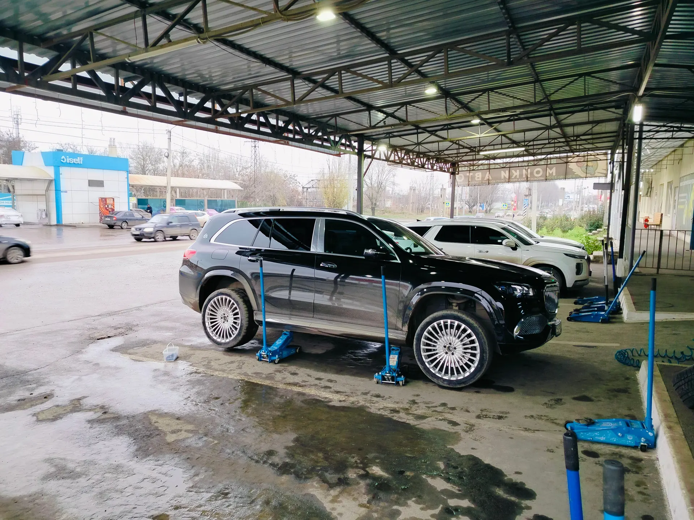
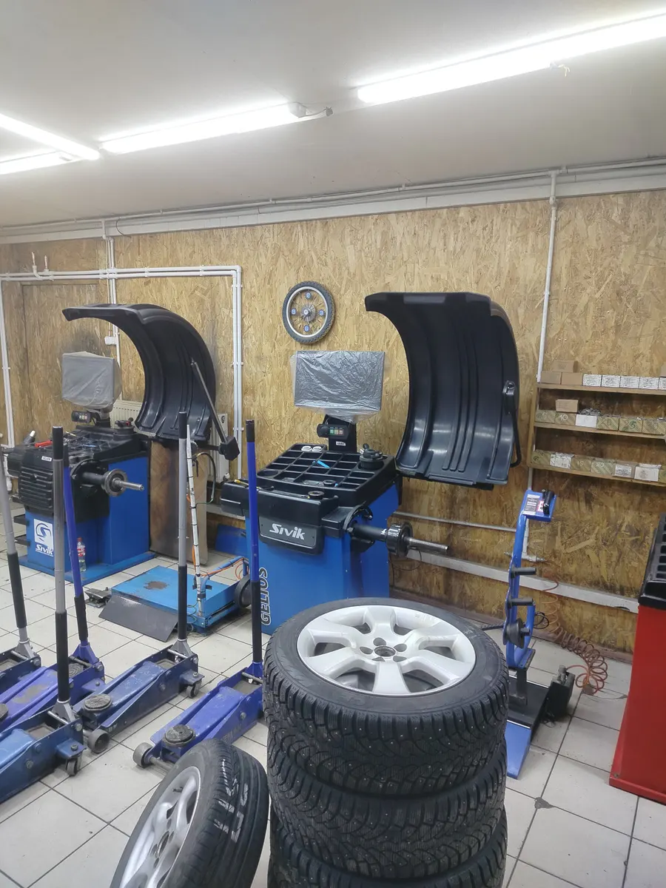
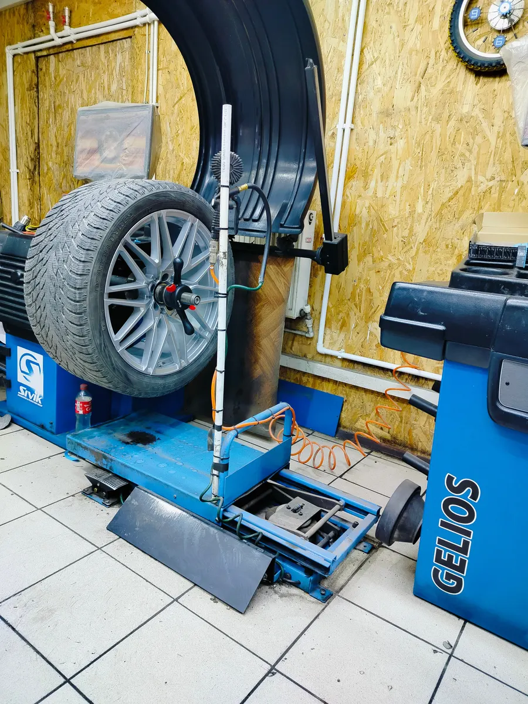
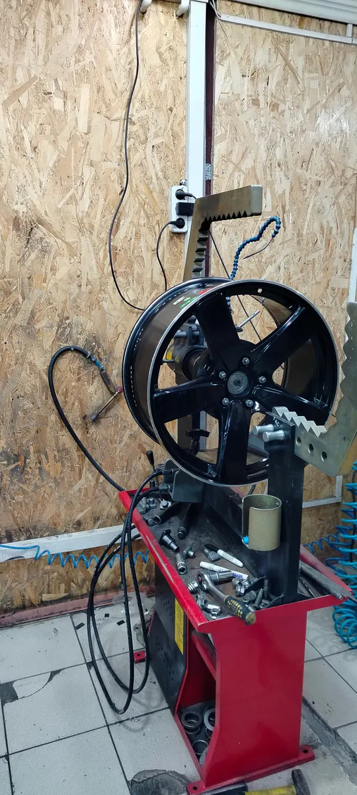

Шиномонтаж · Таганрог
Шиномонтаж в Таганроге: правка дисков и боковые порезы
Клиенты пишут, что здесь берутся за то, от чего отказались другие мастерские. Работают вдвоём, с 9:00 до 19:00.

- Рейтинг 4,8 на Яндекс.Картах, 28 оценок
- Правят диски и ремонтируют боковые порезы – по отзывам
- Ежедневно с 09:00 до 19:00
Услуги и цены
На карточке цены не указаны. Называют по телефону.
Услуги
- Шиномонтажуточнить
- Балансировкауточнить
- Правка дисковуточнить
- Ремонт боковых порезовуточнить
Цены уточняйте у мастера по телефону.
Как проходит
- 01
Позвонили и описали задачу
+7 (904) 507-46-26: колесо, диск или порез.
- 02
Приехали до 19:00
По отзыву, приняли и отремонтировали колесо в 19:30, хотя клиент думал, что уже закрыто.
- 03
Мастер сделал работу
Шиномонтаж, балансировка, правка дисков, ремонт боковых порезов.



Что пишут клиенты
Берутся за сложное
Из отзыва: «Сделали работу от которой все шиномантажники отказались».
Чистят колесо перед балансировкой
Клиент пишет: «каждый камушек вытаскивают, промывают тщательно, и только затем балансируют».
Принимают в конце дня
По отзывам, не отказали за 5 минут до закрытия и задержались после рабочего дня.
Есть где поставить машину
Из отзыва: «Удобная просторная стоянка перед мастерской».
Отзывы с Яндекс.Карт
«Делают боковые порезы, чего никто в городе не умеет делать. Спасибо за вашу работу.»
Ростислав Хирьянов · 29 июня
«Ребята профессионалы своего дела. Сделали работу от которой все шиномантажники отказались ,а они сделали и быстро и качественно. Благодарю и рекомендую от души»
Марина Г. · 23 сентября
«Постоянно здесь обслуживаюсь. Ребята очень доброжелательные. Думал, что работают до 20.00, а на самом деле до 19.00. Приехал в 19.30 и всë равно приняли и отремонтировали колесо.»
Олег Шабельский · 14 сентября
Отзывы с карточки на Яндекс.Картах, без правок.
Контакты
- Адрес
- Поляковское ш., 16А/2, Таганрог
- Часы
- Ежедневно 09:00–19:00
- Телефон
- +7 (904) 507-46-26